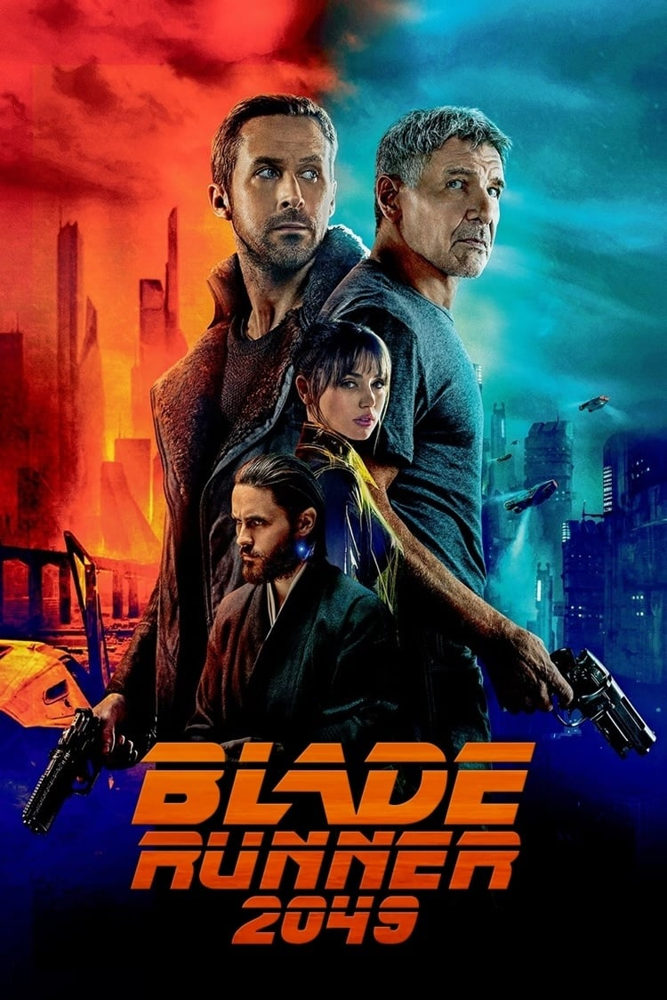

Anthony's personal top 5's
Top 5 films
My top 5 films offer a diverse range of storytelling, from gripping dramas to thought-provoking sci-fi. Each one leaves a lasting impression with unique themes, unforgettable characters, and powerful visuals. Whether it’s exploring the complexities of love in Her, the brutal pursuit of perfection in Whiplash, or the brutal yet redemptive journey in Django Unchained, these films showcase the power of cinema to evoke deep emotions and spark meaningful reflection.
Interstellar is a 2014 science fiction film directed by Christopher Nolan, set in a future where Earth is facing environmental collapse. A group of astronauts, led by Cooper (Matthew McConaughey), travels through a wormhole in search of a new habitable planet. Along the way, they encounter mind-bending concepts like time dilation, black holes, and the survival of humanity. The film explores themes of love, sacrifice, and the limits of human knowledge, with a mix of scientific theory and emotional storytelling. It’s both visually stunning and intellectually complex, with a powerful, emotional conclusion.
Blade Runner 2049 is a 2017 science fiction film directed by Denis Villeneuve and a sequel to the 1982 classic Blade Runner. Set 30 years after the original, it follows K (Ryan Gosling), a replicant who works as a blade runner, tasked with "retiring" rogue replicants. K uncovers a long-buried secret that could reshape society, leading him on a journey to find Rick Deckard (Harrison Ford), the original blade runner. The film explores themes of identity, humanity, and memory, all while featuring stunning cinematography, a haunting score, and a deep philosophical narrative about what it means to be human.

The Godfather (1972), directed by Francis Ford Coppola, is a classic crime drama based on the novel by Mario Puzo. The film follows the powerful Corleone family, led by patriarch Vito Corleone (Marlon Brando), as they navigate organized crime, family loyalty, and power struggles. When Vito’s youngest son, Michael (Al Pacino), is reluctantly drawn into the family's criminal empire, he is forced to confront the dark world of violence and betrayal. Known for its unforgettable performances, iconic quotes, and themes of family, loyalty, and corruption, The Godfather is widely regarded as one of the greatest films ever made.
Her (2013), directed by Spike Jonze, is a thought-provoking science fiction romance set in a near-future world where technology has advanced to the point of artificial intelligence developing emotional depth. The film follows Theodore (Joaquin Phoenix), a lonely man who forms a romantic relationship with Samantha, an AI operating system voiced by Scarlett Johansson. As their bond deepens, Theodore grapples with themes of love, loneliness, and the nature of human connection in an increasingly digital world. Her is visually striking, emotionally complex, and explores the intersections of technology and human intimacy, raising questions about the future of relationships in a tech-driven society.

Whiplash (2014), directed by Damien Chazelle, is a powerful drama about ambition, discipline, and the pursuit of perfection. The film follows Andrew Neiman (Miles Teller), a young, talented jazz drummer who enrolls in a prestigious music conservatory. There, he faces intense and sometimes brutal mentorship from Terence Fletcher (J.K. Simmons), a ruthless instructor who pushes his students to their limits. As Andrew becomes consumed by the desire to impress Fletcher, the film explores the cost of artistic greatness, the fine line between motivation and abuse, and the psychological toll of relentless ambition. Whiplash is gripping, intense, and features outstanding performances, especially from J.K. Simmons, whose portrayal of Fletcher won him an Academy Award.
Honorable mention
Django Unchained (2012), directed by Quentin Tarantino, is a revisionist Western that follows Django (Jamie Foxx), a freed slave who teams up with a German bounty hunter, Dr. King Schultz (Christoph Waltz), to rescue his wife, Broomhilda (Kerry Washington), from a brutal plantation owner, Calvin Candie (Leonardo DiCaprio). Set in the antebellum South, the film blends Tarantino's signature dark humor and violence with themes of revenge, justice, and freedom. Django Unchained is known for its striking cinematography, memorable performances, and sharp dialogue, earning multiple accolades, including two Academy Awards, and solidifying itself as a standout film in Tarantino's career.
In Summary
These five films have earned their place as my all-time favorites for their exceptional storytelling, performances, and their ability to make me think long after the credits roll. Whether it's exploring human connection, justice, or ambition, each one offers something profound. They represent the diversity and impact that great cinema can have, making them stand out in my personal film journey.